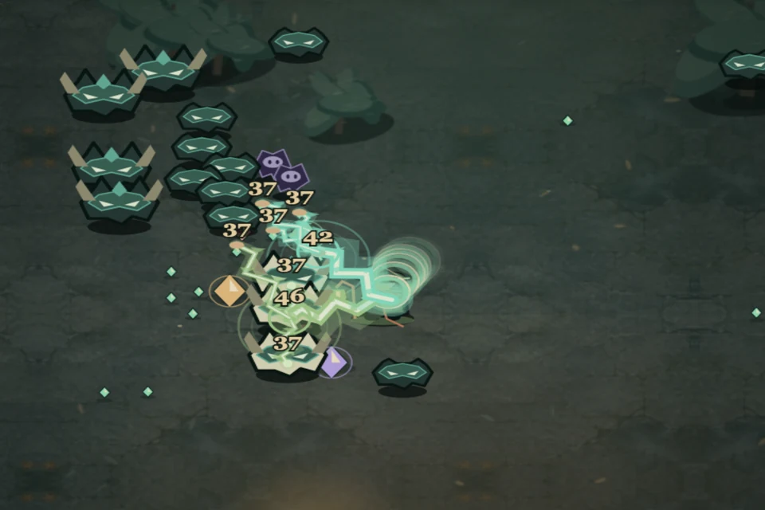

اختر سلاحك
من النصال والرماح إلى الخطافات والسياط والمطارق ومطارق النيازك، يقدم 30 حارسًا مدى وإيقاعًا وأشكال هجوم مختلفة.
فانوس في الضباب
فانوس واحد. ليلة واحدة. اصمد حتى الفجر.
حين يتصاعد الضباب، تنزل المخلوقات على الدرجات الحجرية. اختر حارسًا، وادخل الجبل، وشقّ طريقك عبر نوبات حراسة ليلية قصيرة ومتوترة.

لعبة بقاء هادئة
اختر حارسًا، وتنقّل بين حشود الوحوش، واجمع الخبرة، وشكّل كل جولة من خلال البركات والطفرات. كل ترقية تنطوي على مفاضلة، والموجة التالية تضعها على المحك.
من النصال والرماح إلى الخطافات والسياط والمطارق ومطارق النيازك، يقدم 30 حارسًا مدى وإيقاعًا وأشكال هجوم مختلفة.
اختر واحدة من ثلاث بركات في كل مرة ترتقي فيها مستواك. يدفع الهجوم واحتمال توجيه ضربة حاسمة والمدى والحركة والبقاء بناء شخصيتك في اتجاهات مختلفة.
تبدأ معركة حراس كل خمس مراحل. اهزم جميع الحراس في المسار الحالي لتحقق الاختراق وتتعمق أكثر في الجبل.
ملامح نوبة حراسة واحدة
تهاجم شخصيتك تلقائيًا، لتتفرغ أنت لاختيار الموضع والتوقيت والقرار التالي وسط الضباب.

اختر دورًا متاحًا وأسلوب قتاله، ثم اختر المسار الذي ستضيء فيه أول طريق.
اجمع الخبرة والعتاد، ثم اختر بركات تشكّل تدريجيًا بناء شخصيتك بما يناسب سلاحك وظروفك.
اهزم جميع الحراس في الساحة لفتح المرحلة المقفلة. أكمل المعركة النهائية لإتمام المسار.
مسارات عبر الضباب
من الساحات الحجرية التي يضيئها المطر إلى المياه التي تصطف على ضفافها أعشاب القصب، يفتح كل مسار طريقًا أبعد قليلًا. ويمنح كل تقدم الفانوس التالي مكانًا يبدأ منه.

درج حجري يلمع تحت المطر ويمر عبر بوابة الجبل.

قبل وصول الحراس، يرن الجرس.

بعد إتمام المسار، تواصل حشود الوحوش الصعود عبر الضباب.
ابقَ في النور
تركز Mistwick Vigil على تقديم تجربة فردية دون اتصال بالإنترنت. عند الإبلاغ عن مشكلة، أدرج طراز جهازك وإصدار Android وإصدار التطبيق والخطوات التي أدت إليها. يُرجى عدم تضمين معلومات شخصية حساسة.
تبقى الإعدادات والعناصر المفتوحة والتقدم على جهازك. يؤدي مسح بيانات التطبيق أو إلغاء تثبيته إلى حذفها؛ فهي لا تُزامن مع السحابة.
يعمل اللعب الأساسي دون اتصال بالإنترنت. أما فتح سياسة الخصوصية أو الشروط المستضافة عن بُعد فيتطلب اتصالًا بالإنترنت.
اقرأ سياسة الخصوصية وشروط الخدمة الخاصتين بالإصدار الحالي.

لا تزال Mistwick Vigil قيد التحسين. وسيتطور هذا الموقع وصفحاته القانونية مع تطور اللعبة.